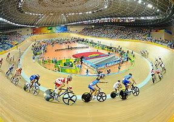
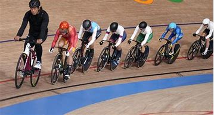
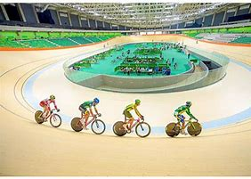

En la actualidad, existe una gran variedad de modalidades deportivas incluyendo al ciclismo, un tipo de deporte que ha venido ganando importancia con el paso de los años y que gana cada día más sus seguidores en todo el mundo. Un deporte que le brinda la capacidad a sus deportistas de disfrutar de diferentes tipos de rutinas, rutas y formas de practicar el deporte.
El ciclismo es un tipo de deporte en donde la principal figura es la bicicleta. Es un deporte completamente competitivo que en ocasiones puede incluir el trabajo en equipo o puede ser completamente individual. Existe además diferentes tipos de ciclismo y es un deporte que aporta una mejora considerable a la salud y que al mismo tiempo mejora la disciplina de quien lo practica. Los inicios del ciclismo de pista datan del siglo diecinueve, cuando en el Reino Unido se comenzaron a realizar las primeras pruebas en pistas sin peraltes, el primer campeonato a nivel mundial de esta modalidad de ciclismo se realizó en el año 1883 en Gran Bretaña, y el ganador del torneo fue Frederic de Civry, posteriormente en el año 1893 el Francés Henry des Granges (fundador del Tour de Francia) obtuvo el primer record hasta la fecha con un recorrido de 35.235 metros en el velódromo Búfalo de Paris.

Gracias a la gran popularidad que tuvo ese primer campeonato, en el año 1896 el ciclismo de pista comenzó a ser deporte olímpico, celebrándose por primera vez en los Juegos Olímpicos de Atenas 1896. Desde estas primeras competiciones el ciclismo de pista ha ido evolucionando, volviéndose cada vez más atractivo para el público y teniendo cada vez una mayor participación de ciclistas. En los primeros juegos olímpicos donde se incluyó esta disciplina deportiva se realizaron seis pruebas en categoría únicamente masculina, estas pruebas fueron: velocidad, sprint, diez mil metros, cien kilómetros, maratón de ochenta y siete kilómetros y doce horas pista.
La mayor cantidad de medallas fue obtenida por Francia quien gano cuatro medallas de oro, una de plata y una de bronce; seguido de Grecia quien obtuvo una de oro y tres de plata, luego Austria con una de oro y dos de broce; el Reino Unido con una de plata y una de bronce y finalmente Alemania únicamente con una de plata. La modalidad utilizada en esta primera edición del ciclismo de ruta se ha sido mantenida, con la única excepción de los juegos olímpicos de Estocolmo 1914 cuando únicamente se realizaron pruebas de ruta. En los juegos olímpicos de Montreal de 1976 fue la primera vez que se efectuaron las competiciones de ciclismo de pista bajo techo, y fue en Los Ángeles en 1984 cuando por primera vez se ejecutó un torneo para especialidad femenina de este deporte. El acontecimiento más reciente de estas competiciones ha sido cuando en los juego celebrados en Pekín en el año 2008 el británico Chris Hoy fue el primero en conseguir tres oros olímpicos en una misma competición a parte de la de Londres de 1908.

Como cada uno de los deportes y de las modalidades de ciclismo, el ciclismo de pista también tiene sus reglas específicas para que se pueda llevar a cabo el deporte de una manera adecuada, entre estas reglas se encuentran las características de la pista, la vestimenta de los participantes, las atribuciones y responsabilidades de los árbitros comisarios, las características de la bicicleta de pista, entre otras. (ver artículo: Ciclismo de Ruta).
La pista en la que se lleva a cabo este deporte es el velódromo, una pista en forma de ovalo y con peralte en los extremos, el plano puede ser de madera o cemento, pueden ser techadas o no y su tamaño va desde doscientos cincuenta hasta trecientos treinta y tres metros. En cuanto a la vestimenta los ciclistas deben llevar casco ergonómico que permita a la persona girar la cabeza, son de material rígido y deben llevar unos agujeros que permitan la ventilación. Los ciclistas también pueden utilizar un casco aerodinámico de material rígido y liviano con la culminación en punta, esto reduce la fricción y resistencia del aire. En cuanto al calzado debe ser especial para este deporte: con suela rígida y sistema de cuña que garantiza el anclaje al pedal, no deben llevar trenzas, en su lugar tendrán un fácil amarre con cierre mágico o chapas de fácil arreglo. Se deben utilizar guantes de licra que pueden ser cortos o largos, es decir hasta la muñeca o los que llegan hasta los codos. El uniforme a utilizar en las competiciones debe ser del equipo o club que representa, será ceñido al cuerpo de licra u otra material que tenga un roce suave y garantice el ajuste al cuerpo evitando que se enganche de alguna parte de la bicicleta, además en el uniforme debe llevar una pañoleta acolchada de material transpirable. En conjunto con el uniforme deben llevar medias cortas que lleguen hasta arriba de los tobillos y que sean de material fino y elástico para que no causen demasiada presión.
